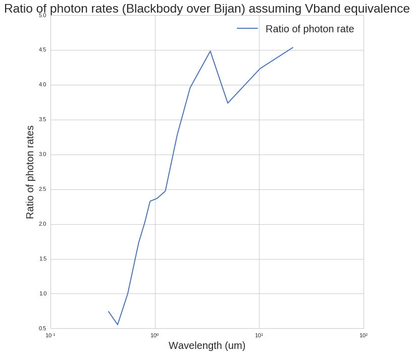

Processing time series¶
This notebook runs through some sanity checks about the photon flux calculations, comparing them to Bijan’s spreadsheet results. This is to ensure that we properly process the input cubes, and gives an idea of how everything is done. Here we take the fiducial example of 47 Uma c.
In [1]:
%pylab inline --no-import-all
matplotlib.rcParams['image.origin'] = 'lower'
matplotlib.rcParams['image.interpolation'] = 'nearest'
#plt.rc('text', usetex=True)
import seaborn as sns
sns.set_style("whitegrid")
matplotlib.rcParams['axes.labelsize'] = 18
import sys
import os
folder = '../../../../crispy'
if folder not in sys.path: sys.path.append(folder)
Populating the interactive namespace from numpy and matplotlib
Calculate photon fluxes¶
Calculate star rates¶
In [2]:
import glob
# load first filelist to get its shape
fileshape = (45,4,4)
import astropy.units as u
import astropy.constants as c
import astropy.analytic_functions as af
planet_radius = 1.27*c.R_jup
ref_star_T=9377*u.K
ref_star_Vmag=2.37
target_star_T=5887*u.K
target_star_Vmag=5.03
lamc=770.
BW=0.18
R=50
n_ref_star_imgs=30
Nlam = 45
lamlist = lamc*np.linspace(1.-BW/2.,1.+BW/2.,Nlam)*u.nm
#tel_pupil_area=np.pi*(2.37/2.*u.m)**2
tel_pupil_area = 1
from crispy.tools.inputScene import convert_krist_cube,calc_contrast_Bijan
target_star_cube = convert_krist_cube(fileshape,lamlist,target_star_T,target_star_Vmag,tel_pupil_area)
print("%e" % np.sum(target_star_cube[:,0,0]))
1.425832e+08
this is the equivalent of convert_krist_cube but for the entire band¶
In [3]:
# We need to determine the coefficient of proportionality between a blackbody source and the
# actualy flux received (depends on size of the star, distance, etc)
# define Vband
lambda_cent = 550*u.nanometer
# this is the flux density per steradian (specific intensity) you would expect from Vband
flux_bb_F550 = af.blackbody_lambda(lambda_cent, target_star_T).to(u.Watt/u.m**2/u.um/u.sr)
# this is the actual flux density received in Vband
Vband_zero_pt = (3953*u.Jansky).to(u.Watt/u.m**2/u.Hertz)
Vband_zero_pt *= (c.c/lambda_cent**2)
flux_star_Vband = Vband_zero_pt*10**(-0.4*target_star_Vmag)
# the ratio is coefficient we seek; this will multiply a blackbody function to yield flux densities
# at all wavelengths
ratio_star = (flux_star_Vband/flux_bb_F550)
# this is the ratio which we want to multiply phot_Uma_Vband for the other bands
#print("Ratio of blackbodies is %f" % ratio_Uma)
# Now convert each slice to photons per second per square meter
dlam = lamlist[-1]-lamlist[0]
# high = c.c/(lamlist[i]-dlam/2.)
# low = c.c/(lamlist[i]+dlam/2.)
# mid = 0.5*(low+high) # middle frequency
# dnu = high-low
# E_ph = (c.h*mid).to(u.J) # photon energy at middle frequency
# BBlam = af.blackbody_nu(lamlist[i], star_T).to(u.Watt/u.m**2/u.Hertz/u.sr)
# flux = (BBlam*ratio_star*dnu).to(u.W/u.m**2) # this is Watts per m2
# photon_flux = flux/E_ph # This is in Photons per second per m2
# newcube[i,:,:] += photon_flux.to(1./u.s/u.m**2)
E_ph = (c.h*c.c/lamlist[Nlam//2]).to(u.J) # photon energy at middle frequency
BBlam = af.blackbody_lambda(lamlist[Nlam//2], target_star_T).to(u.Watt/u.m**2/u.um/u.sr)
flux = (BBlam*ratio_star*dlam).to(u.W/u.m**2) # this is Watts per m2
photon_flux = flux/E_ph # This is in Photons per second per m2
print("Photon flux within band per m2: {:.4E}".format(photon_flux.to(1./u.s/u.m**2)))
print("Planet contrast: {:.4E}".format(calc_contrast_Bijan(lamlist,folder=None)[0]))
print("Planet flux within band per m2: {:.4E}".format(photon_flux.to(1/u.s/u.m**2)*calc_contrast_Bijan(lamlist,folder=None)[0]))
Photon flux within band per m2: 1.3975E+08 1 / (m2 s)
Planet contrast: 7.9584E-09
Planet flux within band per m2: 1.1122E+00 1 / (m2 s)
Electrons¶
In [4]:
t_pl = 0.0064 # total planet transmission
Atot = np.pi*(2.37*u.m/2.)**2
QE = 0.68
signalQE = 0.93*0.8*QE
single_bin_frac = 1./R/BW
print("Planet electron conversion rate: {:.4E}".format(single_bin_frac*t_pl*Atot*QE*photon_flux.to(1/u.s/u.m**2)*calc_contrast_Bijan(lamlist,folder=None)[0]))
print("Planet signal rate: {:.4E}".format(single_bin_frac*t_pl*Atot*signalQE*photon_flux.to(1/u.s/u.m**2)*calc_contrast_Bijan(lamlist,folder=None)[0]))
Planet electron conversion rate: 2.3726E-03 1 / s
Planet signal rate: 1.7652E-03 1 / s
Compare directly to Bijan’s fluxtable¶
In [5]:
Bij_lams = [0.36,
0.44,
0.55,
0.70,
0.80,
0.90,
1.05,
1.26,
1.64,
2.18,
3.40,
5.00,
10.20,
21.00]
Bij_flux_densities = [4.35e-08,
7.20e-08,
3.92e-08,
1.76e-08,
1.21e-08,
8.30e-09,
5.72e-09,
3.40e-09,
1.18e-09,
3.90e-10,
7.30e-11,
2.12e-11,
1.23e-12,
6.80e-14]
plt.figure(figsize=(10,10))
plt.loglog(Bij_lams,Bij_flux_densities,label="Bijan's zero-points")
BB6 = af.blackbody_lambda(Bij_lams*u.um, 6000*u.K).to(u.Watt/u.m**2/u.um/u.sr)
BB9 = af.blackbody_lambda(Bij_lams*u.um, 9000*u.K).to(u.Watt/u.m**2/u.um/u.sr)
plt.loglog(Bij_lams,BB6/BB6[2]*Bij_flux_densities[2],label='6000K star blackbody')
plt.loglog(Bij_lams,BB9/BB9[2]*Bij_flux_densities[2],label='9000K star blackbody')
plt.xlabel('Wavelength (um)')
plt.ylabel(r'Flux density zero-point (W/m2/um)')#($Wm^{-2}\mu m^{-1}$)')
plt.title('All curves normalized to same Vband flux density',fontsize = 22)
plt.legend(fontsize=18)
Out[5]:
<matplotlib.legend.Legend at 0x7f71bea306d0>

In [6]:
plt.figure(figsize=(10,10))
Bij_energies = c.c*c.h/Bij_lams
plt.loglog(Bij_lams,Bij_flux_densities/Bij_energies,label="Bijan's zero-points")
BB6 = af.blackbody_lambda(Bij_lams*u.um, 6000*u.K).to(u.Watt/u.m**2/u.um/u.sr)
BB9 = af.blackbody_lambda(Bij_lams*u.um, 9000*u.K).to(u.Watt/u.m**2/u.um/u.sr)
plt.loglog(Bij_lams,BB6/BB6[2]*Bij_flux_densities[2]/Bij_energies,label='6000K star blackbody')
plt.loglog(Bij_lams,BB9/BB9[2]*Bij_flux_densities[2]/Bij_energies,label='9000K star blackbody')
plt.xlabel('Wavelength (um)')
plt.ylabel(r'Photon rate zero-point (photons/s/m2/um)')#($\textrm{photons} s^{-1} m^{-2}\mu m^{-1}$)')
plt.title('Photon rates',fontsize = 22)
plt.legend(fontsize=18)
Out[6]:
<matplotlib.legend.Legend at 0x7f71bc74fc50>

In [7]:
plt.figure(figsize=(10,10))
Bij_energies = c.c*c.h/Bij_lams
BB6 = af.blackbody_lambda(Bij_lams*u.um, 6000*u.K).to(u.Watt/u.m**2/u.um/u.sr)
plt.semilogx(Bij_lams,BB6/BB6[2]*Bij_flux_densities[2]/Bij_flux_densities,label="Ratio of photon rate")
plt.xlabel('Wavelength (um)')
plt.ylabel(r'Ratio of photon rates')
plt.title('Ratio of photon rates (Blackbody over Bijan) assuming Vband equivalence',fontsize = 22)
plt.legend(fontsize=18)
Out[7]:
<matplotlib.legend.Legend at 0x7f71bc48b710>

In [8]:
from scipy.interpolate import interp1d
ratios =interp1d(Bij_lams,BB6/BB6[2]*Bij_flux_densities[2]/Bij_flux_densities)
print("Ratio at 0.7 microns (our flux over what Bijan finds):")
print(ratios(0.7))
Ratio at 0.7 microns (our flux over what Bijan finds):
1.73229183163
In [ ]:
Comparison to John Krist’s files¶
The purpose of this section is to examine the files from John Krist to see if everything checks out compared to Bijan’s estimates
In [9]:
from crispy.tools.image import Image
from astropy.io import fits
from crispy.IFS import propagateIFS
from crispy.params import Params
codefolder = '../../../crispy'
par = Params(codefolder)
print(par.exportDir)
par.saveDetector = False
psf_time_series_folder='/local/data/nicolaus2/mrizzo/haystacks/for_gsfc/with_lowfc'
# load the filenames
filelist = glob.glob(psf_time_series_folder+'/*')
filelist.sort()
# load first filelist to get its shape
fileshape = Image(filename=filelist[0]).data.shape
tel_pupil_area = 4.412*u.m**2*0.835
# reference and target star cube conversions
ref_star_cube = convert_krist_cube(fileshape,lamlist,ref_star_T,ref_star_Vmag,tel_pupil_area)
target_star_cube = convert_krist_cube(fileshape,lamlist,target_star_T,target_star_Vmag,tel_pupil_area)
# Pick one of the images in the time series
reffile = filelist[45]
cube = fits.open(reffile)[0]
print("Sum of John Krist's cube: %e" %np.sum(cube.data))
cube.data*=target_star_cube
#cube.write('test_Krist_cube.fits',clobber=True)
out = fits.HDUList(fits.PrimaryHDU(cube.data.astype(np.float32)))
out.writeto(par.exportDir + '/test_Krist_cube.fits', clobber=True)
print("Total counts from star at primary after obscuration: %e" % np.sum(target_star_cube[:,0,0]))
print("Sum of cube in photons per second: %f (residual speckle rate for entire area w/o focal plane mask)" % np.sum(cube.data))
print("Coronagraph contrast (no focal plane mask): %e " % (np.sum(cube.data)/np.sum(target_star_cube[:,0,0])))
../../../crispy/SimResults
crispy - INFO - Read data from HDU 0 of /local/data/nicolaus2/mrizzo/haystacks/for_gsfc/with_lowfc/os5_spc_001.fits
INFO:crispy:Read data from HDU 0 of /local/data/nicolaus2/mrizzo/haystacks/for_gsfc/with_lowfc/os5_spc_001.fits
Sum of John Krist's cube: 6.151959e-08
Total counts from star at primary after obscuration: 5.252795e+08
Sum of cube in photons per second: 0.716411 (residual speckle rate for entire area w/o focal plane mask)
Coronagraph contrast (no focal plane mask): 1.363867e-09
In [10]:
offaxispsf= '/local/data/nicolaus2/mrizzo/haystacks/for_gsfc/spc_offaxis_psf.fits'
offaxis = fits.open(offaxispsf)[0]
print("Sum of John Krist's offaxis: %f" %np.sum(offaxis.data))
fileshape=offaxis.data.shape
target_star_cube = convert_krist_cube(fileshape,lamlist,target_star_T,target_star_Vmag,tel_pupil_area)
contrast = calc_contrast_Bijan(lamlist)
contrast_cube = np.zeros(offaxis.data.shape)
for i in range(offaxis.data.shape[0]):
contrast_cube[i,:,:] += contrast[i]*offaxis.data.shape[0]
offaxis.data*=target_star_cube*contrast_cube
out = fits.HDUList(fits.PrimaryHDU(offaxis.data.astype(np.float32)))
out.writeto(par.exportDir + '/test_Krist_offaxis.fits', clobber=True)
print("Total counts per second from planet at primary after obscuration: %e" % np.sum(target_star_cube[:,0,0]*contrast))
print("Sum of cube in photons per second: %f" % np.sum(offaxis.data))
print("Planet raw throughput (no reflections/transmissions): %e " % (np.sum(offaxis.data)/np.sum(target_star_cube[:,0,0]*contrast)))
plt.plot(lamlist,target_star_cube[:,0,0]*contrast)
Sum of John Krist's offaxis: 0.146600
Total counts per second from planet at primary after obscuration: 4.188372e+00
Sum of cube in photons per second: 0.614669
Planet raw throughput (no reflections/transmissions): 1.467561e-01
Out[10]:
[<matplotlib.lines.Line2D at 0x7f71abbcf2d0>]

In [11]:
par.saveRotatedInput = True
from crispy.IFS import propagateIFS
if offaxis.header['LAM_C']==0.8:
if lamc==770.:
offaxis.header['LAM_C']=0.77
# by NOT changing the pixelsize, we implicitly assume that the PSF is the same at 770 then at 800
else:
offaxis.header['LAM_C']=lamc/1000.
offaxis.header['PIXSIZE']*=lamc/0.77
else:
offaxis.header['LAM_C']=lamc/1000.
offaxis.header['PIXSIZE']*=lamc/0.77
par.saveDetector=True
pol=0.5
IFSLosses = 0.30
QE = 0.68
PhCountingEff = 0.8
CTE = .893
offaxis.data*=IFSLosses*QE*PhCountingEff*CTE*pol
# offaxis.data*=0.68*0.8*0.893
print(np.sum(offaxis.data))
detectorFrame = propagateIFS(par,lamlist.value/1000.,offaxis)
0.0447902061724
crispy - INFO - The number of input pixels per lenslet is 3.896104
INFO:crispy:The number of input pixels per lenslet is 3.896104
crispy - INFO - Using PSFlet gaussian approximation
INFO:crispy:Using PSFlet gaussian approximation
crispy - INFO - Final detector pixel per PSFLet: 40.000000
INFO:crispy:Final detector pixel per PSFLet: 40.000000
crispy - INFO - Processing wavelength 0.700700 (0 out of 45)
INFO:crispy:Processing wavelength 0.700700 (0 out of 45)
DEBUG:crispy:Input plane is 92x92
crispy - INFO - Writing data to ../../../crispy/SimResults/imagePlaneRot_700.7nm.fits
INFO:crispy:Writing data to ../../../crispy/SimResults/imagePlaneRot_700.7nm.fits
crispy - INFO - Processing wavelength 0.703850 (1 out of 45)
INFO:crispy:Processing wavelength 0.703850 (1 out of 45)
DEBUG:crispy:Input plane is 92x92
crispy - INFO - Writing data to ../../../crispy/SimResults/imagePlaneRot_703.9nm.fits
INFO:crispy:Writing data to ../../../crispy/SimResults/imagePlaneRot_703.9nm.fits
crispy - INFO - Processing wavelength 0.707000 (2 out of 45)
INFO:crispy:Processing wavelength 0.707000 (2 out of 45)
DEBUG:crispy:Input plane is 92x92
crispy - INFO - Writing data to ../../../crispy/SimResults/imagePlaneRot_707.0nm.fits
INFO:crispy:Writing data to ../../../crispy/SimResults/imagePlaneRot_707.0nm.fits
crispy - INFO - Processing wavelength 0.710150 (3 out of 45)
INFO:crispy:Processing wavelength 0.710150 (3 out of 45)
DEBUG:crispy:Input plane is 92x92
crispy - INFO - Writing data to ../../../crispy/SimResults/imagePlaneRot_710.2nm.fits
INFO:crispy:Writing data to ../../../crispy/SimResults/imagePlaneRot_710.2nm.fits
crispy - INFO - Processing wavelength 0.713300 (4 out of 45)
INFO:crispy:Processing wavelength 0.713300 (4 out of 45)
DEBUG:crispy:Input plane is 92x92
crispy - INFO - Writing data to ../../../crispy/SimResults/imagePlaneRot_713.3nm.fits
INFO:crispy:Writing data to ../../../crispy/SimResults/imagePlaneRot_713.3nm.fits
crispy - INFO - Processing wavelength 0.716450 (5 out of 45)
INFO:crispy:Processing wavelength 0.716450 (5 out of 45)
DEBUG:crispy:Input plane is 92x92
crispy - INFO - Writing data to ../../../crispy/SimResults/imagePlaneRot_716.5nm.fits
INFO:crispy:Writing data to ../../../crispy/SimResults/imagePlaneRot_716.5nm.fits
crispy - INFO - Processing wavelength 0.719600 (6 out of 45)
INFO:crispy:Processing wavelength 0.719600 (6 out of 45)
DEBUG:crispy:Input plane is 92x92
crispy - INFO - Writing data to ../../../crispy/SimResults/imagePlaneRot_719.6nm.fits
INFO:crispy:Writing data to ../../../crispy/SimResults/imagePlaneRot_719.6nm.fits
crispy - INFO - Processing wavelength 0.722750 (7 out of 45)
INFO:crispy:Processing wavelength 0.722750 (7 out of 45)
DEBUG:crispy:Input plane is 92x92
crispy - INFO - Writing data to ../../../crispy/SimResults/imagePlaneRot_722.8nm.fits
INFO:crispy:Writing data to ../../../crispy/SimResults/imagePlaneRot_722.8nm.fits
crispy - INFO - Processing wavelength 0.725900 (8 out of 45)
INFO:crispy:Processing wavelength 0.725900 (8 out of 45)
DEBUG:crispy:Input plane is 92x92
crispy - INFO - Writing data to ../../../crispy/SimResults/imagePlaneRot_725.9nm.fits
INFO:crispy:Writing data to ../../../crispy/SimResults/imagePlaneRot_725.9nm.fits
crispy - INFO - Processing wavelength 0.729050 (9 out of 45)
INFO:crispy:Processing wavelength 0.729050 (9 out of 45)
DEBUG:crispy:Input plane is 92x92
crispy - INFO - Writing data to ../../../crispy/SimResults/imagePlaneRot_729.1nm.fits
INFO:crispy:Writing data to ../../../crispy/SimResults/imagePlaneRot_729.1nm.fits
crispy - INFO - Processing wavelength 0.732200 (10 out of 45)
INFO:crispy:Processing wavelength 0.732200 (10 out of 45)
DEBUG:crispy:Input plane is 92x92
crispy - INFO - Writing data to ../../../crispy/SimResults/imagePlaneRot_732.2nm.fits
INFO:crispy:Writing data to ../../../crispy/SimResults/imagePlaneRot_732.2nm.fits
crispy - INFO - Processing wavelength 0.735350 (11 out of 45)
INFO:crispy:Processing wavelength 0.735350 (11 out of 45)
DEBUG:crispy:Input plane is 92x92
crispy - INFO - Writing data to ../../../crispy/SimResults/imagePlaneRot_735.4nm.fits
INFO:crispy:Writing data to ../../../crispy/SimResults/imagePlaneRot_735.4nm.fits
crispy - INFO - Processing wavelength 0.738500 (12 out of 45)
INFO:crispy:Processing wavelength 0.738500 (12 out of 45)
DEBUG:crispy:Input plane is 92x92
crispy - INFO - Writing data to ../../../crispy/SimResults/imagePlaneRot_738.5nm.fits
INFO:crispy:Writing data to ../../../crispy/SimResults/imagePlaneRot_738.5nm.fits
crispy - INFO - Processing wavelength 0.741650 (13 out of 45)
INFO:crispy:Processing wavelength 0.741650 (13 out of 45)
DEBUG:crispy:Input plane is 92x92
crispy - INFO - Writing data to ../../../crispy/SimResults/imagePlaneRot_741.7nm.fits
INFO:crispy:Writing data to ../../../crispy/SimResults/imagePlaneRot_741.7nm.fits
crispy - INFO - Processing wavelength 0.744800 (14 out of 45)
INFO:crispy:Processing wavelength 0.744800 (14 out of 45)
DEBUG:crispy:Input plane is 92x92
crispy - INFO - Writing data to ../../../crispy/SimResults/imagePlaneRot_744.8nm.fits
INFO:crispy:Writing data to ../../../crispy/SimResults/imagePlaneRot_744.8nm.fits
crispy - INFO - Processing wavelength 0.747950 (15 out of 45)
INFO:crispy:Processing wavelength 0.747950 (15 out of 45)
DEBUG:crispy:Input plane is 92x92
crispy - INFO - Writing data to ../../../crispy/SimResults/imagePlaneRot_748.0nm.fits
INFO:crispy:Writing data to ../../../crispy/SimResults/imagePlaneRot_748.0nm.fits
crispy - INFO - Processing wavelength 0.751100 (16 out of 45)
INFO:crispy:Processing wavelength 0.751100 (16 out of 45)
DEBUG:crispy:Input plane is 92x92
crispy - INFO - Writing data to ../../../crispy/SimResults/imagePlaneRot_751.1nm.fits
INFO:crispy:Writing data to ../../../crispy/SimResults/imagePlaneRot_751.1nm.fits
crispy - INFO - Processing wavelength 0.754250 (17 out of 45)
INFO:crispy:Processing wavelength 0.754250 (17 out of 45)
DEBUG:crispy:Input plane is 92x92
crispy - INFO - Writing data to ../../../crispy/SimResults/imagePlaneRot_754.2nm.fits
INFO:crispy:Writing data to ../../../crispy/SimResults/imagePlaneRot_754.2nm.fits
crispy - INFO - Processing wavelength 0.757400 (18 out of 45)
INFO:crispy:Processing wavelength 0.757400 (18 out of 45)
DEBUG:crispy:Input plane is 92x92
crispy - INFO - Writing data to ../../../crispy/SimResults/imagePlaneRot_757.4nm.fits
INFO:crispy:Writing data to ../../../crispy/SimResults/imagePlaneRot_757.4nm.fits
crispy - INFO - Processing wavelength 0.760550 (19 out of 45)
INFO:crispy:Processing wavelength 0.760550 (19 out of 45)
DEBUG:crispy:Input plane is 92x92
crispy - INFO - Writing data to ../../../crispy/SimResults/imagePlaneRot_760.6nm.fits
INFO:crispy:Writing data to ../../../crispy/SimResults/imagePlaneRot_760.6nm.fits
crispy - INFO - Processing wavelength 0.763700 (20 out of 45)
INFO:crispy:Processing wavelength 0.763700 (20 out of 45)
DEBUG:crispy:Input plane is 92x92
crispy - INFO - Writing data to ../../../crispy/SimResults/imagePlaneRot_763.7nm.fits
INFO:crispy:Writing data to ../../../crispy/SimResults/imagePlaneRot_763.7nm.fits
crispy - INFO - Processing wavelength 0.766850 (21 out of 45)
INFO:crispy:Processing wavelength 0.766850 (21 out of 45)
DEBUG:crispy:Input plane is 92x92
crispy - INFO - Writing data to ../../../crispy/SimResults/imagePlaneRot_766.9nm.fits
INFO:crispy:Writing data to ../../../crispy/SimResults/imagePlaneRot_766.9nm.fits
crispy - INFO - Processing wavelength 0.770000 (22 out of 45)
INFO:crispy:Processing wavelength 0.770000 (22 out of 45)
DEBUG:crispy:Input plane is 92x92
crispy - INFO - Writing data to ../../../crispy/SimResults/imagePlaneRot_770.0nm.fits
INFO:crispy:Writing data to ../../../crispy/SimResults/imagePlaneRot_770.0nm.fits
crispy - INFO - Processing wavelength 0.773150 (23 out of 45)
INFO:crispy:Processing wavelength 0.773150 (23 out of 45)
DEBUG:crispy:Input plane is 92x92
crispy - INFO - Writing data to ../../../crispy/SimResults/imagePlaneRot_773.2nm.fits
INFO:crispy:Writing data to ../../../crispy/SimResults/imagePlaneRot_773.2nm.fits
crispy - INFO - Processing wavelength 0.776300 (24 out of 45)
INFO:crispy:Processing wavelength 0.776300 (24 out of 45)
DEBUG:crispy:Input plane is 92x92
crispy - INFO - Writing data to ../../../crispy/SimResults/imagePlaneRot_776.3nm.fits
INFO:crispy:Writing data to ../../../crispy/SimResults/imagePlaneRot_776.3nm.fits
crispy - INFO - Processing wavelength 0.779450 (25 out of 45)
INFO:crispy:Processing wavelength 0.779450 (25 out of 45)
DEBUG:crispy:Input plane is 92x92
crispy - INFO - Writing data to ../../../crispy/SimResults/imagePlaneRot_779.5nm.fits
INFO:crispy:Writing data to ../../../crispy/SimResults/imagePlaneRot_779.5nm.fits
crispy - INFO - Processing wavelength 0.782600 (26 out of 45)
INFO:crispy:Processing wavelength 0.782600 (26 out of 45)
DEBUG:crispy:Input plane is 92x92
crispy - INFO - Writing data to ../../../crispy/SimResults/imagePlaneRot_782.6nm.fits
INFO:crispy:Writing data to ../../../crispy/SimResults/imagePlaneRot_782.6nm.fits
crispy - INFO - Processing wavelength 0.785750 (27 out of 45)
INFO:crispy:Processing wavelength 0.785750 (27 out of 45)
DEBUG:crispy:Input plane is 92x92
crispy - INFO - Writing data to ../../../crispy/SimResults/imagePlaneRot_785.8nm.fits
INFO:crispy:Writing data to ../../../crispy/SimResults/imagePlaneRot_785.8nm.fits
crispy - INFO - Processing wavelength 0.788900 (28 out of 45)
INFO:crispy:Processing wavelength 0.788900 (28 out of 45)
DEBUG:crispy:Input plane is 92x92
crispy - INFO - Writing data to ../../../crispy/SimResults/imagePlaneRot_788.9nm.fits
INFO:crispy:Writing data to ../../../crispy/SimResults/imagePlaneRot_788.9nm.fits
crispy - INFO - Processing wavelength 0.792050 (29 out of 45)
INFO:crispy:Processing wavelength 0.792050 (29 out of 45)
DEBUG:crispy:Input plane is 92x92
crispy - INFO - Writing data to ../../../crispy/SimResults/imagePlaneRot_792.1nm.fits
INFO:crispy:Writing data to ../../../crispy/SimResults/imagePlaneRot_792.1nm.fits
crispy - INFO - Processing wavelength 0.795200 (30 out of 45)
INFO:crispy:Processing wavelength 0.795200 (30 out of 45)
DEBUG:crispy:Input plane is 92x92
crispy - INFO - Writing data to ../../../crispy/SimResults/imagePlaneRot_795.2nm.fits
INFO:crispy:Writing data to ../../../crispy/SimResults/imagePlaneRot_795.2nm.fits
crispy - INFO - Processing wavelength 0.798350 (31 out of 45)
INFO:crispy:Processing wavelength 0.798350 (31 out of 45)
DEBUG:crispy:Input plane is 92x92
crispy - INFO - Writing data to ../../../crispy/SimResults/imagePlaneRot_798.4nm.fits
INFO:crispy:Writing data to ../../../crispy/SimResults/imagePlaneRot_798.4nm.fits
crispy - INFO - Processing wavelength 0.801500 (32 out of 45)
INFO:crispy:Processing wavelength 0.801500 (32 out of 45)
DEBUG:crispy:Input plane is 92x92
crispy - INFO - Writing data to ../../../crispy/SimResults/imagePlaneRot_801.5nm.fits
INFO:crispy:Writing data to ../../../crispy/SimResults/imagePlaneRot_801.5nm.fits
crispy - INFO - Processing wavelength 0.804650 (33 out of 45)
INFO:crispy:Processing wavelength 0.804650 (33 out of 45)
DEBUG:crispy:Input plane is 92x92
crispy - INFO - Writing data to ../../../crispy/SimResults/imagePlaneRot_804.7nm.fits
INFO:crispy:Writing data to ../../../crispy/SimResults/imagePlaneRot_804.7nm.fits
crispy - INFO - Processing wavelength 0.807800 (34 out of 45)
INFO:crispy:Processing wavelength 0.807800 (34 out of 45)
DEBUG:crispy:Input plane is 92x92
crispy - INFO - Writing data to ../../../crispy/SimResults/imagePlaneRot_807.8nm.fits
INFO:crispy:Writing data to ../../../crispy/SimResults/imagePlaneRot_807.8nm.fits
crispy - INFO - Processing wavelength 0.810950 (35 out of 45)
INFO:crispy:Processing wavelength 0.810950 (35 out of 45)
DEBUG:crispy:Input plane is 92x92
crispy - INFO - Writing data to ../../../crispy/SimResults/imagePlaneRot_811.0nm.fits
INFO:crispy:Writing data to ../../../crispy/SimResults/imagePlaneRot_811.0nm.fits
crispy - INFO - Processing wavelength 0.814100 (36 out of 45)
INFO:crispy:Processing wavelength 0.814100 (36 out of 45)
DEBUG:crispy:Input plane is 92x92
crispy - INFO - Writing data to ../../../crispy/SimResults/imagePlaneRot_814.1nm.fits
INFO:crispy:Writing data to ../../../crispy/SimResults/imagePlaneRot_814.1nm.fits
crispy - INFO - Processing wavelength 0.817250 (37 out of 45)
INFO:crispy:Processing wavelength 0.817250 (37 out of 45)
DEBUG:crispy:Input plane is 92x92
crispy - INFO - Writing data to ../../../crispy/SimResults/imagePlaneRot_817.3nm.fits
INFO:crispy:Writing data to ../../../crispy/SimResults/imagePlaneRot_817.3nm.fits
crispy - INFO - Processing wavelength 0.820400 (38 out of 45)
INFO:crispy:Processing wavelength 0.820400 (38 out of 45)
DEBUG:crispy:Input plane is 92x92
crispy - INFO - Writing data to ../../../crispy/SimResults/imagePlaneRot_820.4nm.fits
INFO:crispy:Writing data to ../../../crispy/SimResults/imagePlaneRot_820.4nm.fits
crispy - INFO - Processing wavelength 0.823550 (39 out of 45)
INFO:crispy:Processing wavelength 0.823550 (39 out of 45)
DEBUG:crispy:Input plane is 92x92
crispy - INFO - Writing data to ../../../crispy/SimResults/imagePlaneRot_823.6nm.fits
INFO:crispy:Writing data to ../../../crispy/SimResults/imagePlaneRot_823.6nm.fits
crispy - INFO - Processing wavelength 0.826700 (40 out of 45)
INFO:crispy:Processing wavelength 0.826700 (40 out of 45)
DEBUG:crispy:Input plane is 92x92
crispy - INFO - Writing data to ../../../crispy/SimResults/imagePlaneRot_826.7nm.fits
INFO:crispy:Writing data to ../../../crispy/SimResults/imagePlaneRot_826.7nm.fits
crispy - INFO - Processing wavelength 0.829850 (41 out of 45)
INFO:crispy:Processing wavelength 0.829850 (41 out of 45)
DEBUG:crispy:Input plane is 92x92
crispy - INFO - Writing data to ../../../crispy/SimResults/imagePlaneRot_829.9nm.fits
INFO:crispy:Writing data to ../../../crispy/SimResults/imagePlaneRot_829.9nm.fits
crispy - INFO - Processing wavelength 0.833000 (42 out of 45)
INFO:crispy:Processing wavelength 0.833000 (42 out of 45)
DEBUG:crispy:Input plane is 92x92
crispy - INFO - Writing data to ../../../crispy/SimResults/imagePlaneRot_833.0nm.fits
INFO:crispy:Writing data to ../../../crispy/SimResults/imagePlaneRot_833.0nm.fits
crispy - INFO - Processing wavelength 0.836150 (43 out of 45)
INFO:crispy:Processing wavelength 0.836150 (43 out of 45)
DEBUG:crispy:Input plane is 92x92
crispy - INFO - Writing data to ../../../crispy/SimResults/imagePlaneRot_836.1nm.fits
INFO:crispy:Writing data to ../../../crispy/SimResults/imagePlaneRot_836.1nm.fits
crispy - INFO - Processing wavelength 0.839300 (44 out of 45)
INFO:crispy:Processing wavelength 0.839300 (44 out of 45)
DEBUG:crispy:Input plane is 92x92
crispy - INFO - Writing data to ../../../crispy/SimResults/imagePlaneRot_839.3nm.fits
INFO:crispy:Writing data to ../../../crispy/SimResults/imagePlaneRot_839.3nm.fits
crispy - INFO - Number of detector pixels per lenslet: 13.384615
INFO:crispy:Number of detector pixels per lenslet: 13.384615
crispy - INFO - Rebinning final detector. Image has dimensions 1024x1024
INFO:crispy:Rebinning final detector. Image has dimensions 1024x1024
crispy - INFO - Writing data to ../../../crispy/SimResults/detectorFrame.fits
INFO:crispy:Writing data to ../../../crispy/SimResults/detectorFrame.fits
crispy - INFO - Done.
INFO:crispy:Done.
crispy - INFO - Performance: 42 seconds total
INFO:crispy:Performance: 42 seconds total
In [12]:
print(np.sum(offaxis.data)*0.11)
np.sum(offaxis.data)*0.11/3e-3
0.00492692267897
Out[12]:
1.6423075596556362
In [13]:
rotated_list = glob.glob(par.exportDir+'/imagePlaneRot*nm.fits')
sum_rotated = np.zeros(Image(rotated_list[0]).data.shape)
for filename in rotated_list:
sum_rotated += Image(filename).data
out = fits.HDUList(fits.PrimaryHDU(sum_rotated.astype(np.float32)))
out.writeto(par.exportDir + '/imagePlaneRot_sum.fits', clobber=True)
crispy - INFO - Read data from HDU 1 of ../../../crispy/SimResults/imagePlaneRot_817.3nm.fits
INFO:crispy:Read data from HDU 1 of ../../../crispy/SimResults/imagePlaneRot_817.3nm.fits
crispy - INFO - Read data from HDU 1 of ../../../crispy/SimResults/imagePlaneRot_817.3nm.fits
INFO:crispy:Read data from HDU 1 of ../../../crispy/SimResults/imagePlaneRot_817.3nm.fits
crispy - INFO - Read data from HDU 1 of ../../../crispy/SimResults/imagePlaneRot_748.0nm.fits
INFO:crispy:Read data from HDU 1 of ../../../crispy/SimResults/imagePlaneRot_748.0nm.fits
crispy - INFO - Read data from HDU 1 of ../../../crispy/SimResults/imagePlaneRot_798.4nm.fits
INFO:crispy:Read data from HDU 1 of ../../../crispy/SimResults/imagePlaneRot_798.4nm.fits
crispy - INFO - Read data from HDU 1 of ../../../crispy/SimResults/imagePlaneRot_707.0nm.fits
INFO:crispy:Read data from HDU 1 of ../../../crispy/SimResults/imagePlaneRot_707.0nm.fits
crispy - INFO - Read data from HDU 1 of ../../../crispy/SimResults/imagePlaneRot_741.7nm.fits
INFO:crispy:Read data from HDU 1 of ../../../crispy/SimResults/imagePlaneRot_741.7nm.fits
crispy - INFO - Read data from HDU 1 of ../../../crispy/SimResults/imagePlaneRot_710.2nm.fits
INFO:crispy:Read data from HDU 1 of ../../../crispy/SimResults/imagePlaneRot_710.2nm.fits
crispy - INFO - Read data from HDU 1 of ../../../crispy/SimResults/imagePlaneRot_826.7nm.fits
INFO:crispy:Read data from HDU 1 of ../../../crispy/SimResults/imagePlaneRot_826.7nm.fits
crispy - INFO - Read data from HDU 1 of ../../../crispy/SimResults/imagePlaneRot_788.9nm.fits
INFO:crispy:Read data from HDU 1 of ../../../crispy/SimResults/imagePlaneRot_788.9nm.fits
crispy - INFO - Read data from HDU 1 of ../../../crispy/SimResults/imagePlaneRot_754.2nm.fits
INFO:crispy:Read data from HDU 1 of ../../../crispy/SimResults/imagePlaneRot_754.2nm.fits
crispy - INFO - Read data from HDU 1 of ../../../crispy/SimResults/imagePlaneRot_833.0nm.fits
INFO:crispy:Read data from HDU 1 of ../../../crispy/SimResults/imagePlaneRot_833.0nm.fits
crispy - INFO - Read data from HDU 1 of ../../../crispy/SimResults/imagePlaneRot_770.0nm.fits
INFO:crispy:Read data from HDU 1 of ../../../crispy/SimResults/imagePlaneRot_770.0nm.fits
crispy - INFO - Read data from HDU 1 of ../../../crispy/SimResults/imagePlaneRot_779.5nm.fits
INFO:crispy:Read data from HDU 1 of ../../../crispy/SimResults/imagePlaneRot_779.5nm.fits
crispy - INFO - Read data from HDU 1 of ../../../crispy/SimResults/imagePlaneRot_804.7nm.fits
INFO:crispy:Read data from HDU 1 of ../../../crispy/SimResults/imagePlaneRot_804.7nm.fits
crispy - INFO - Read data from HDU 1 of ../../../crispy/SimResults/imagePlaneRot_716.5nm.fits
INFO:crispy:Read data from HDU 1 of ../../../crispy/SimResults/imagePlaneRot_716.5nm.fits
crispy - INFO - Read data from HDU 1 of ../../../crispy/SimResults/imagePlaneRot_757.4nm.fits
INFO:crispy:Read data from HDU 1 of ../../../crispy/SimResults/imagePlaneRot_757.4nm.fits
crispy - INFO - Read data from HDU 1 of ../../../crispy/SimResults/imagePlaneRot_792.1nm.fits
INFO:crispy:Read data from HDU 1 of ../../../crispy/SimResults/imagePlaneRot_792.1nm.fits
crispy - INFO - Read data from HDU 1 of ../../../crispy/SimResults/imagePlaneRot_773.2nm.fits
INFO:crispy:Read data from HDU 1 of ../../../crispy/SimResults/imagePlaneRot_773.2nm.fits
crispy - INFO - Read data from HDU 1 of ../../../crispy/SimResults/imagePlaneRot_820.4nm.fits
INFO:crispy:Read data from HDU 1 of ../../../crispy/SimResults/imagePlaneRot_820.4nm.fits
crispy - INFO - Read data from HDU 1 of ../../../crispy/SimResults/imagePlaneRot_744.8nm.fits
INFO:crispy:Read data from HDU 1 of ../../../crispy/SimResults/imagePlaneRot_744.8nm.fits
crispy - INFO - Read data from HDU 1 of ../../../crispy/SimResults/imagePlaneRot_729.1nm.fits
INFO:crispy:Read data from HDU 1 of ../../../crispy/SimResults/imagePlaneRot_729.1nm.fits
crispy - INFO - Read data from HDU 1 of ../../../crispy/SimResults/imagePlaneRot_839.3nm.fits
INFO:crispy:Read data from HDU 1 of ../../../crispy/SimResults/imagePlaneRot_839.3nm.fits
crispy - INFO - Read data from HDU 1 of ../../../crispy/SimResults/imagePlaneRot_782.6nm.fits
INFO:crispy:Read data from HDU 1 of ../../../crispy/SimResults/imagePlaneRot_782.6nm.fits
crispy - INFO - Read data from HDU 1 of ../../../crispy/SimResults/imagePlaneRot_807.8nm.fits
INFO:crispy:Read data from HDU 1 of ../../../crispy/SimResults/imagePlaneRot_807.8nm.fits
crispy - INFO - Read data from HDU 1 of ../../../crispy/SimResults/imagePlaneRot_814.1nm.fits
INFO:crispy:Read data from HDU 1 of ../../../crispy/SimResults/imagePlaneRot_814.1nm.fits
crispy - INFO - Read data from HDU 1 of ../../../crispy/SimResults/imagePlaneRot_713.3nm.fits
INFO:crispy:Read data from HDU 1 of ../../../crispy/SimResults/imagePlaneRot_713.3nm.fits
crispy - INFO - Read data from HDU 1 of ../../../crispy/SimResults/imagePlaneRot_722.8nm.fits
INFO:crispy:Read data from HDU 1 of ../../../crispy/SimResults/imagePlaneRot_722.8nm.fits
crispy - INFO - Read data from HDU 1 of ../../../crispy/SimResults/imagePlaneRot_823.6nm.fits
INFO:crispy:Read data from HDU 1 of ../../../crispy/SimResults/imagePlaneRot_823.6nm.fits
crispy - INFO - Read data from HDU 1 of ../../../crispy/SimResults/imagePlaneRot_703.9nm.fits
INFO:crispy:Read data from HDU 1 of ../../../crispy/SimResults/imagePlaneRot_703.9nm.fits
crispy - INFO - Read data from HDU 1 of ../../../crispy/SimResults/imagePlaneRot_829.9nm.fits
INFO:crispy:Read data from HDU 1 of ../../../crispy/SimResults/imagePlaneRot_829.9nm.fits
crispy - INFO - Read data from HDU 1 of ../../../crispy/SimResults/imagePlaneRot_801.5nm.fits
INFO:crispy:Read data from HDU 1 of ../../../crispy/SimResults/imagePlaneRot_801.5nm.fits
crispy - INFO - Read data from HDU 1 of ../../../crispy/SimResults/imagePlaneRot_795.2nm.fits
INFO:crispy:Read data from HDU 1 of ../../../crispy/SimResults/imagePlaneRot_795.2nm.fits
crispy - INFO - Read data from HDU 1 of ../../../crispy/SimResults/imagePlaneRot_738.5nm.fits
INFO:crispy:Read data from HDU 1 of ../../../crispy/SimResults/imagePlaneRot_738.5nm.fits
crispy - INFO - Read data from HDU 1 of ../../../crispy/SimResults/imagePlaneRot_785.8nm.fits
INFO:crispy:Read data from HDU 1 of ../../../crispy/SimResults/imagePlaneRot_785.8nm.fits
crispy - INFO - Read data from HDU 1 of ../../../crispy/SimResults/imagePlaneRot_732.2nm.fits
INFO:crispy:Read data from HDU 1 of ../../../crispy/SimResults/imagePlaneRot_732.2nm.fits
crispy - INFO - Read data from HDU 1 of ../../../crispy/SimResults/imagePlaneRot_763.7nm.fits
INFO:crispy:Read data from HDU 1 of ../../../crispy/SimResults/imagePlaneRot_763.7nm.fits
crispy - INFO - Read data from HDU 1 of ../../../crispy/SimResults/imagePlaneRot_836.1nm.fits
INFO:crispy:Read data from HDU 1 of ../../../crispy/SimResults/imagePlaneRot_836.1nm.fits
crispy - INFO - Read data from HDU 1 of ../../../crispy/SimResults/imagePlaneRot_751.1nm.fits
INFO:crispy:Read data from HDU 1 of ../../../crispy/SimResults/imagePlaneRot_751.1nm.fits
crispy - INFO - Read data from HDU 1 of ../../../crispy/SimResults/imagePlaneRot_811.0nm.fits
INFO:crispy:Read data from HDU 1 of ../../../crispy/SimResults/imagePlaneRot_811.0nm.fits
crispy - INFO - Read data from HDU 1 of ../../../crispy/SimResults/imagePlaneRot_700.7nm.fits
INFO:crispy:Read data from HDU 1 of ../../../crispy/SimResults/imagePlaneRot_700.7nm.fits
crispy - INFO - Read data from HDU 1 of ../../../crispy/SimResults/imagePlaneRot_776.3nm.fits
INFO:crispy:Read data from HDU 1 of ../../../crispy/SimResults/imagePlaneRot_776.3nm.fits
crispy - INFO - Read data from HDU 1 of ../../../crispy/SimResults/imagePlaneRot_760.6nm.fits
INFO:crispy:Read data from HDU 1 of ../../../crispy/SimResults/imagePlaneRot_760.6nm.fits
crispy - INFO - Read data from HDU 1 of ../../../crispy/SimResults/imagePlaneRot_725.9nm.fits
INFO:crispy:Read data from HDU 1 of ../../../crispy/SimResults/imagePlaneRot_725.9nm.fits
crispy - INFO - Read data from HDU 1 of ../../../crispy/SimResults/imagePlaneRot_735.4nm.fits
INFO:crispy:Read data from HDU 1 of ../../../crispy/SimResults/imagePlaneRot_735.4nm.fits
crispy - INFO - Read data from HDU 1 of ../../../crispy/SimResults/imagePlaneRot_719.6nm.fits
INFO:crispy:Read data from HDU 1 of ../../../crispy/SimResults/imagePlaneRot_719.6nm.fits
crispy - INFO - Read data from HDU 1 of ../../../crispy/SimResults/imagePlaneRot_766.9nm.fits
INFO:crispy:Read data from HDU 1 of ../../../crispy/SimResults/imagePlaneRot_766.9nm.fits
In [15]:
print(np.sum(sum_rotated)*0.11)
print(np.sum(offaxis.data*0.11))
0.00492673001821
0.00492692267897